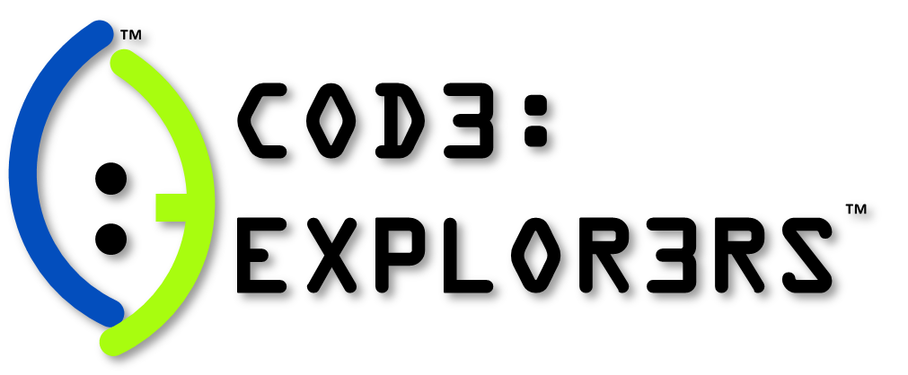

Code Explorers Internship

I was given the opportunity to teach kids from ages 13 and below about 4th generation technology and basic programming for the summer of 2019.
Some of the subjects taught include mobile and 3D game development, Minecraft Artificial Intelligence, and Virtual and Augmuented reality.
While most of the coding consisted of block programming, I was able to give my students a headstart on understanding core concepts such as variables, functions,
conditional logic, object-oriented programming principles, and even a little bit of data structures.
Check out their website:
www.codeexplorers.org